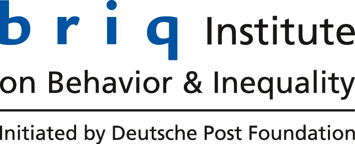
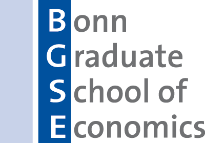
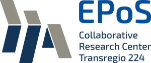

University of Bonn
Institute for Applied Microeconomics
Tuesdays, 14:15–15:30
briq, Schaumburg-Lippe-Straße 9—unless otherwise noted
Coordinators: Thomas Dohmen, Florian Zimmermann
|  |  | In cooperation with |  |
To receive announcements of upcoming talks via e-mail, please subscribe to the Bonn Econ News.
For further information regarding the presentations and regarding the availability of sign-up meetings with the speakers, send us an e-mail to be added to the Applied Micro mailing list.
Participation in the online sessions of the Applied Micro Workshop and subscription to the Applied Micro mailing list are restricted to researchers and students of the University of Bonn and collaborating institutions (e.g., via CRCs or Clusters of Excellence).